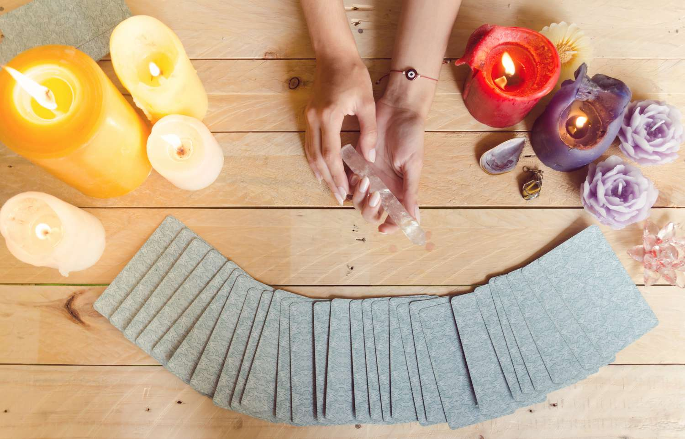

NUESTRAS TERAPIAS
¿QUÉ BRINDAMOS?
Conoce nuestras terapias y sus beneficios
- Reiki:
- Reiki es una terapia complementaria, caracterizada por la imposición de manos como un objetivo para restablecer el equilibrio físico, mental y espiritual.
- Reiki Karmico:
- Es un sistema que utiliza la percepción, realizando un escaneo del cuerpo etérico, más la aplicación de 5 nuevos símbolos específicos para la limpieza y sanación del karma. Se realizan técnicas y ejercicios para conectar con nuestra alma, los ángeles y el universo.
- Limpieza Energética:
- La limpieza energética nos permite vivir una vida sin cargas emocionales ni energéticas, en la que podamos ser nosotros mismos. A veces nuestra contaminación energética nos impide ver más allá y dar los pasos hacia el cambio que necesitamos.
- Registros Akáshicos:
- La función de los registros akáshicos es permitir ver aspectos de la vida que no estabas viendo, aclarar muchas dudas del presente para sanar y descubrir el origen de situaciones en específicas de la vida.
- Canalización Angelical:
- La Canalización Angelical es un encuentro con tu Ángel Guardián, tus Guías Celestiales y los Arcángeles, durante esta terapia Espiritual ellos responderán a las dudas que habitan tu corazón y recibirás de forma detallada la guía para que tomes la mejor decisión o encuentres el mejor camino para tu vida.
- Runas Vikingas:
- Según la tradición vikinga, además se ser útiles para la escritura, las runas también sirven para la adivinación. Según los significados de cada una de las runas, se puede formular una pregunta y, lanzando las piezas que contiene cada una de las runas dibujadas, se puede saber qué depara el futuro.

- Tarot Angelical:
- El Tarot Angelical ofrece toda la información sobre los distintos ángeles y sus funciones protectoras con el ser humano. Con la baraja de cartas se puede responder preguntas sobre el pasado, el presente y el futuro del consultante.
- Numerología:
- La numerología es una herramienta que se utiliza para ganar un acceso más profundo al conocimiento sobre nosotros mismos, los demás y cómo nos relacionamos con el mundo.
- Péndulo Hebreo:
- El Péndulo Hebreo es una técnica que se utiliza para Limpieza y Transmutación energética. Trabaja sobre el cuerpo áurico detectando y limpiando las infecciones energéticas.